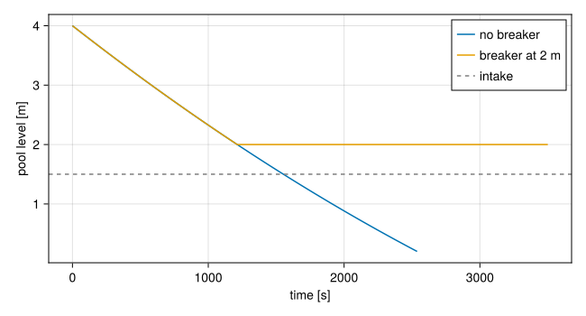

Model a break
A break is an Orifice that discharges into an Environment. The orifice opens and shuts with a StateMachine, so its timing, a siphon breaker, and the end of the run are all transitions. The physics is in Loss of coolant.
The examples on this page drain a pool over a siphon: a line leaves the pool at 1.5 m, climbs to a crest at 5 m, where the break is, and falls to an outlet at −3 m. One function builds it, with a few choices left open:
using STREAMusing STREAM.Components: Tank, Orifice, Environment, Gravity, StateMachine, machine_callbacksusing STREAM.Assemblies: inseriesusing STREAM.LocalLoss: discharge_cdusing STREAM.Thresholds: cavitationusing ModelingToolkit: @named, mtkcompilefunction siphon(; T_pool=30.0, breaker=nothing) @named pool = Tank(; area=2.0, L0=4.0, ports=(intake=1.5,), T0=T_pool) line = StateMachine(; initial_state=:OPEN, initial_time=0.0) # the break, at t = 0 breaker === nothing || push!(line, (:OPEN => :SHUT, pool.L < breaker, "siphon breaker")) cd = discharge_cd(:sharp) @named breach = Orifice(; area=5e-4, cd, cc=cd, dp_linear=1e-3, machine=line) @named climb = Gravity(5.0 - 1.5) @named fall = Gravity(-3.0 - 5.0) @named room = Environment(; T=T_pool) @named model = assembly(inseries(pool.intake, climb, breach, fall, room.port), pool, climb, breach, fall, room) watch = StateMachine(; initial_state=:INTACT, abort_states=(:UNCOVERED,)) push!(watch, (:INTACT => :UNCOVERED, pool.L < 0.2, "pool empty")) throat = StateMachine(; initial_state=:LIQUID) push!(throat, (:LIQUID => :FLASHING, breach.subcooling < 0, "crest at saturation")) sys = mtkcompile(model) sol = solve_transient(sys, solve_steady(sys), range(0.0, 3500.0; length=701); overrides=[sys.pool.pinned => false], callbacks=machine_callbacks(sys, line, watch, throat)) return sys, sol, (; line, watch, throat)endOpen the break at a given time
Give the orifice a machine that enters its open state at that time, StateMachine(; initial_state=:OPEN, initial_time=t_break). Before t_break it is shut, so a steady solve sees the intact plant, and from t_break it opens over 1/open_rate seconds. To open it on a condition instead, start it in :SHUT with a transition to :OPEN, or open it by hand before the run with trip!(machine, t; state=:OPEN).
The discharge coefficient is a number, such as discharge_cd(:sharp) for a hole in a plate or discharge_cd(:pipe_stub) for a severed pipe end, or a function of the throat Reynolds number, such as Re -> lichtarowicz_cd(Re, 2.0) for a short bore at low flow.
Stop the run at core uncovery
Put the level at which the model stops holding into a machine's abort_states. Here that is the pool emptying to its floor:
sys, sol, machines = siphon()machines.watch.log2 states entered:
t = 0.0 s INTACT initial
t = 2537.59 s UNCOVERED pool emptyThe siphon kept drawing after the level fell past the intake at 1.5 m: a tank does not shut a nozzle the surface uncovers.
Shut a line when the level passes it
A siphon breaker, or the air a line draws once its intake uncovers, is a transition that shuts the orifice. Here it shuts the break when the level reaches 2 m:
sys, broken, machines = siphon(; breaker=2.0)machines.line.log2 states entered:
t = 0.0 s OPEN initial
t = 1213.25 s SHUT siphon breakerusing CairoMakiefig = Figure(size=(650, 350))ax = Axis(fig[1, 1]; xlabel="time [s]", ylabel="pool level [m]")lines!(ax, sol.t, sol[sys.pool.L]; label="no breaker")lines!(ax, broken.t, broken[sys.pool.L]; label="breaker at 2 m")hlines!(ax, [1.5]; color=:gray, linestyle=:dash, label="intake")axislegend(ax)fig
@assert machines.line.state === :SHUT && machines.watch.state === :INTACT@assert abs(broken[sys.pool.L][end] - 2.0) < 0.01Check that the water at the break stays liquid
Build the orifice with a contraction coefficient cc, as siphon does, and it reports the pressure at its vena contracta and the water's subcooling there. At the crest of a siphon the pressure falls below the atmosphere's, and hot water there boils. cavitation lists the orifices whose subcooling reached zero, at which saved time, and by how much:
sys, hot, machines = siphon(; T_pool=90.0)cavitation(hot, sys.breach)1-element Vector{@NamedTuple{site::Symbol, time::Union{Nothing, Float64}, margin::Float64}}:
@NamedTuple{site::Symbol, time::Union{Nothing, Float64}, margin::Float64}((:breach, 0.05518964896515309, -24.62468073072303))It reads only the saved times. The throat machine's transition on breach.subcooling < 0 catches the moment itself, located by the solver:
machines.throat.log2 states entered:
t = 0.0 s LIQUID initial
t = 0.0551896 s FLASHING crest at saturationA cold pool passes:
sys, cold, _ = siphon(; T_pool=20.0)@assert isempty(cavitation(cold, sys.breach))cavitation(cold, sys.breach)@NamedTuple{site::Symbol, time::Union{Nothing, Float64}, margin::Float64}[]The break's flow law is single-phase throughout, so a run that reaches saturation at a break has left the model's range from that time on.